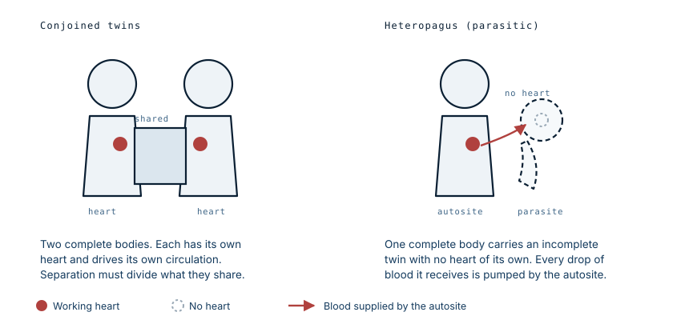

Parasitic twin: the twin with no heart
She was born weighing 2.2 kg, carrying a second head with eyes, ears, nose and lips, and a malformed hand lying against her chest. None of it had a circulation of its own. Every beat that kept it alive came from her.
What heteropagus twinning is
An embryo that begins to split into identical twins and does not finish the process can end in several ways. In conjoined twinning, both twins develop fully and remain joined at some surface, each with its own heart driving its own circulation. Separating them means dividing whatever they share, and both may survive.
Heteropagus twinning is a different problem. One twin develops normally, and the other does not develop a functioning heart. Without a pump of its own it cannot sustain itself, so it survives only as long as it stays attached to its sibling's circulation. Anatomists call the complete twin the autosite and the incomplete one the parasite. The parasite may have recognisable parts — limbs, a face, sometimes bowel — but no independent life.

It is rare. Published estimates put it at roughly one per million live births, which is why most paediatric surgeons never see a case.
Why it cannot be left alone
The instinct on seeing a stable newborn is to wait, grow the baby, and operate when she is stronger. Heteropagus twinning inverts that reasoning.
The attached tissue is perfused by the autosite's heart, which means a newborn heart is pumping for two bodies. The parasite consumes oxygen and nutrients and returns nothing. Left in place, it imposes a continuous volume load on a circulation that has just made the transition to breathing air, and it draws off the supply the baby needs to grow. Waiting does not make the operation safer. It makes the patient weaker.
In this case the surgical team described the attachment as feeding off her blood supply and depriving her of what she needed to develop, and moved to remove it.
What the operation has to establish first
The critical question before cutting is not what the parasite looks like. It is what it is connected to.
The vessels running into parasitic tissue can be substantial, and in some cases the two share more than blood — bowel, bone, or a segment of another organ. Dividing a large feeding vessel without control causes rapid loss in a patient whose entire blood volume is a few hundred millilitres. Cutting through a shared structure without knowing it is shared can damage something the surviving child needs. This is why imaging and radiological consultation come before the incision, and why the team here worked with radiologists in planning.
The separation took about four hours. She recovered, fed at the breast, and was discharged. The hospital did not charge the family, who were farmers, for any part of the care.
The scan that was done and the conversation that was not
The mother had attended for ultrasound during the pregnancy, and the scans showed twins. What she was not told was that one of them was not developing.
The family met the diagnosis for the first time in the delivery room, and their initial reaction was devastation. Consent for surgery had to be obtained from parents who had been given no warning at all, in the hours after a birth that had gone nothing like what they were expecting.
Heteropagus twinning is detectable before birth. A scan that shows an unequal, incompletely formed second fetus allows the delivery to be planned at a centre with paediatric surgery, and lets the family be prepared, counselled, and given time. The imaging in this case was performed. What did not happen was the interpretation reaching the people who most needed it.
What this case teaches
Two lessons sit side by side here. Clinically, an attached parasitic twin is a haemodynamic burden rather than a cosmetic one, and delay works against the patient rather than for her. Practically, the scan that detects an anomaly only helps if what it shows is explained to the family. A finding that stays inside the imaging department changes nothing about how a birth is planned or how prepared the parents are when it happens.